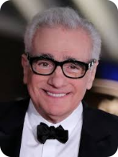

CINE-PLUS
Películas
Series
Eventos
Principal

Productor
Director
Reparto
Martin Scorsese
Biografia
Martin Charles Scorsese (Nueva York, 17 de noviembre de 1942) es un director, guionista y productor de cine estadounidense.1 Con una trayectoria que abarca más de cincuenta años, las películas de Scorsese abordan temáticas relacionadas con el catolicismo, la identidad italoestadounidense o la criminalidad,2 caracterizándose por su violencia, uso del lenguaje vulgar, estar ambientadas en la ciudad de Nueva York y la inclusión de canciones pop, rock y clásicas en la banda sonora.